第22章：列表与导航¶
大多数应用程序至少有一个视图，在表格或网格中显示类似项目的集合。当一个屏幕上的项目太多，无法容纳时，用户可以通过垂直和/或水平滚动来查看更多项目。在许多情况下，点击一个项目可以导航到一个视图，显示关于这个项目的更多细节。
在本节中，你将创建RWFreeView应用程序。它获取免费的raywenderlich.com视频剧集的信息，并在应用程序中流式播放它们。用户可以根据平台和难度进行过滤，并按日期或流行程度进行排序。
在本章中，你将创建一个RWFreeView的原型，在一个NavigationView中列出剧集的List。点击一个列表项就可以把详细的视图推到导航栈上。启动项目已经包含了PlayerView.swift，它显示一个VideoPlayer，就像HIITFit中的那个。PlayerView在屏幕有常规高度时显示情节信息--纵向的iPhone或iPad。
开始工作¶
打开启动器文件夹中的RWFreeView应用程序。在本章中，启动项目初始化了预览内容中的Episode数据。在第24章"下载数据"中，你将从api.raywenderlich.com获取这些数据。
启动代码包括一些可访问性功能，因此该应用程序自动支持动态类型和黑暗模式。你可以在我们的三部分教程中了解更多关于SwiftUI的可访问性，从bit.ly/2WYD9sI开始，以及我们的SwiftUI by Tutorials一书中的Accessibility章节bit.ly/32oFTCs。
List¶
SwiftUI的List视图是在垂直滚动的视图中展示项目集合的最简单方法。你可以在同一个List中显示单独的视图和循环数组。在本章中，你将从列出剧集开始，然后在剧集项目上方添加一个标题视图。
要呈现一个剧集列表，其语法看起来很像ForEach。
➤ 在ContentView.swift中，用以下代码替换ContentView的内容：
@StateObject private var store = EpisodeStore()
var body: some View {
List(store.episodes, id: \.name) { episode in
EpisodeView(episode: episode)
}
}
你初始化EpisodeStore，它创建了一个样本episodes数组。然后你告诉List在episodes上循环，并提供一个id。像ForEach一样，List希望每个项目都有一个标识符，所以它知道哪个项目在哪一行。参数.name告诉List每个项目都由该属性值来识别。
创建一个梯度背景¶
EpisodeView已经在EpisodeView.swift中定义，以显示关于剧集的有用信息。它包含一个图标，表示选择它将播放视频。PlayButtonIcon的背景是一个自定义颜色：
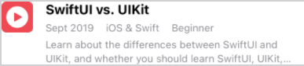
不难猜到你接下来要做什么。你要把背景改成一个渐变，从深到浅，水平地穿过图标。
➤ 在PlayButtonIcon.swift中，给PlayButtonIcon添加这个属性：
let gradientColors = Gradient(
colors: [Color.gradientDark, Color.gradientLight])
你指定构成梯度的颜色。你可以使用你喜欢的多种颜色。对于这个小图标，两种颜色就足够了。
Note
我在资产目录Assets.xcassets/colors中定义了这些颜色。设计师挑选这些颜色是为了在浅色和深色的外观下看起来都很好，所以每个自定义的颜色只有一个通用设置。在ColorExtension.swift中，我将gradientDark和gradientLight添加到标准Color值中。
➤ 现在用以下内容替换.fill(Color.gradientDark)：
.fill(
LinearGradient(
gradient: gradientColors,
startPoint: .leading,
endPoint: .trailing))
你提供一个梯度颜色的数组。这是一个LinearGradient，所以你要提供开始和结束点。这些值沿着图标的水平轴应用梯度，从leading的深色到trailing的浅色进行分级。
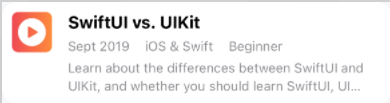
其他的起点和终点沿着不同的轴创建梯度，例如，垂直地从top到bottom，或者斜向地从topLeading到bottomTrailing。
还有两种类型的梯度：RadialGradient从开始半径到结束半径的梯度，AngularGradient从开始角度到结束角度。
自动适应黑暗模式¶
EpisodeView使用标准的系统和UI元素的颜色，在用户打开黑暗模式时自动适应，并使用内置的文本样式如headline来支持动态类型。资产目录中定义的大多数自定义颜色都设置了黑暗外观值。
Note
苹果公司的《人机界面指南▸视觉设计▸色彩》apple.co/39GwXvn显示了深色和浅色模式的系统色彩，并列出了UI元素的色彩。人机界面指南▸视觉设计▸排版apple.co/39HydhD有一个文本样式、重量和尺寸的表格。
EpisodeView也使用AdaptingStack，当用户在设置中选择较大的文本时，从HStack切换到VStack。AdaptingStack来自WWDC 2019 Session 412中的代码。Xcode 11的调试（apple.co/3u0kr2z）。
➤ 在ContentView.swift中，使用预览检查器将Color Scheme切换为Dark，或者在previews中，向ContentView()添加此修改器：
.preferredColorScheme(.dark)
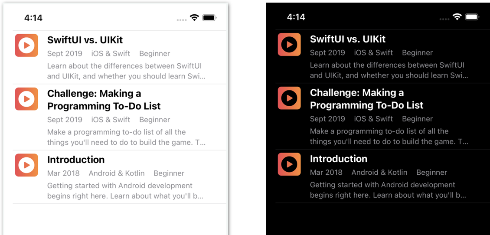
➤ 将颜色方案切换回浅色，或者在previews中，注释掉.preferredColorScheme(.dark)。
NavigationView¶
在第15章"结构、类和协议"中，你使用了NavigationView，所以你可以在CardDetailView中添加工具条按钮。导航工具栏对于把标题和按钮放在用户希望看到的地方很有用。但是NavigationView的主要目的是在你的应用程序的导航层次中管理一个导航栈。在本节中，当用户点击List项目时，你将把一个PlayerView推到导航堆栈中。
首先添加一个带有标题的导航条。
➤ 在ContentView.swift中，将List嵌入到NavigationView中，并修改它以设置屏幕的标题：
NavigationView {
List(store.episodes, id: \.name) { episode in
EpisodeView(episode: episode)
}
.navigationTitle("Videos")
}
注意navigationTitle修改的是List，而不是NavigationView。一个NavigationView可以包含其他的根视图，每个都有自己的.navigationTitle和工具条。
Note
navigationTitle取代了navigationBarTitle，后者已被弃用。
➤ 刷新预览。默认情况下，你会得到一个大标题：
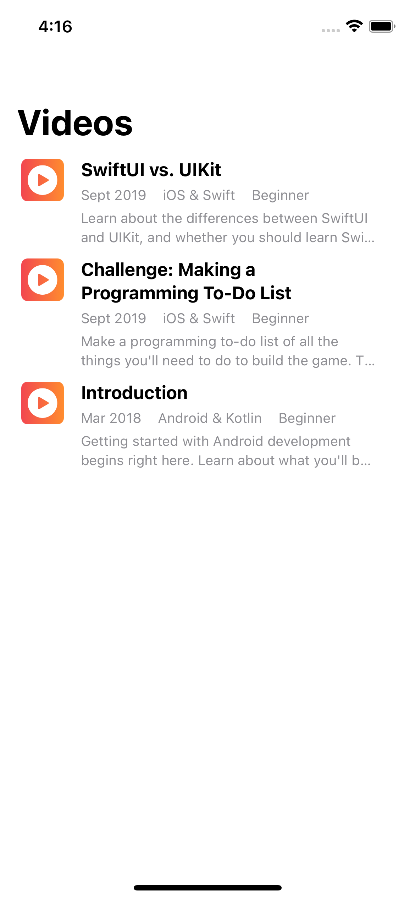
修改导航栏¶
此应用程序的Figma设计要求在浅色和深色方案中使用黑色导航栏。
➤ 在ContentView中添加以下方法，在body下面：
init() {
// 1
let appearance = UINavigationBarAppearance()
appearance.backgroundColor = UIColor(named: "top-bkgd")
appearance.largeTitleTextAttributes =
[.foregroundColor: UIColor.white]
appearance.titleTextAttributes =
[.foregroundColor: UIColor.white]
// 2
UINavigationBar.appearance().tintColor = .white
// 3
UINavigationBar.appearance().standardAppearance = appearance
UINavigationBar.appearance().compactAppearance = appearance
UINavigationBar.appearance().scrollEdgeAppearance = appearance
// 4
UISegmentedControl.appearance()
.selectedSegmentTintColor = UIColor(named: "list-bkgd")
}
作为一个结构，ContentView有一个默认的初始化器，所以你通常不需要写一个init()方法。在这种情况下，你需要设置一些你无法用SwiftUI访问的属性。SwiftUI还没有修改导航栏外观的API，所以你必须依靠UIKit的UINavigationBarAppearance来配置其属性。
- 你创建一个
UINavigationBarAppearance的实例，然后将背景颜色设置为几乎黑色，对于大尺寸和标准尺寸的标题，你将文本颜色设置为白色。 UINavigationBarAppearance没有tintColor属性，所以你在底层UINavigationBar的UIAppearance代理中设置它。这个设置会影响后退按钮文本和后退箭头的颜色。- 你将你的
UINavigationBarAppearance配置分配给UINavigationBar的所有三种外观：标准高度、紧凑高度以及当可滚动内容的边缘到达导航条的匹配边缘时。 - 你很快就会添加一个带有分段控制的标题视图。在这里，你可以设置所选段的颜色，以匹配你将用于列表背景的颜色。
➤ 刷新预览：
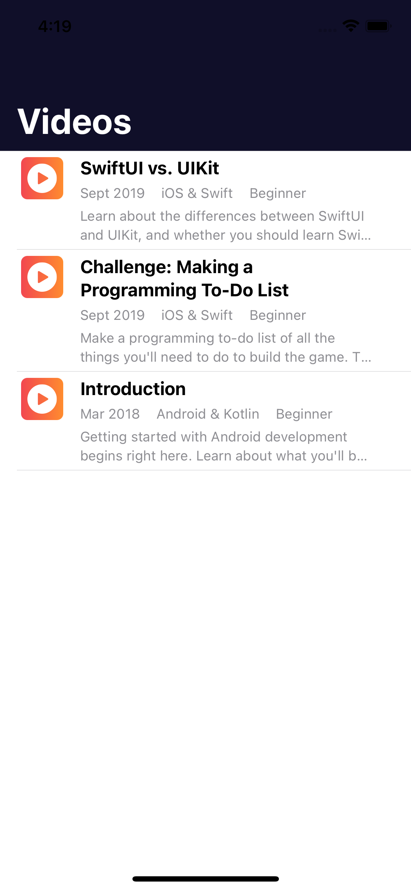
现在你已经准备好了，可以导航到PlayerView并添加一个工具条按钮。
导航到详细视图¶
为了看到那个被你染成白色的后退按钮，当用户点选一个列表项时，你将导航到视频播放器视图。
➤ 在List闭包中，用这个替换EpisodeView( episode: episode)：
NavigationLink(destination: PlayerView(episode: episode)) {
EpisodeView(episode: episode)
}
你将List行的内容视图嵌入到NavigationLink中，并将destination设置为PlayerView。
➤ 实时预览ContentView并点击一个项目：
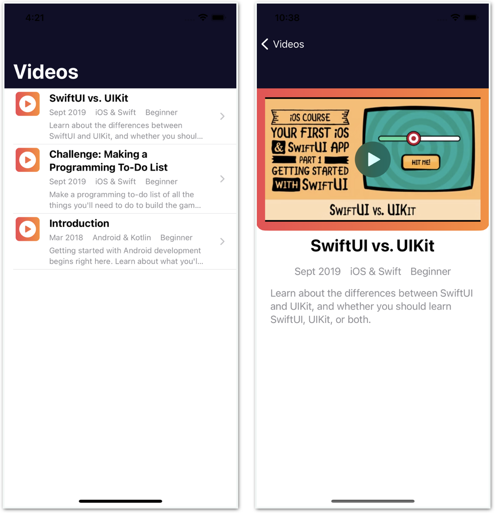
每一行List都获得了一个披露指标，告诉用户还有更多的东西要看。
ContentView是目前导航栈中唯一的视图。当你点击一个项目时，NavigationView会把PlayerView推到导航栈中。它现在是堆栈中最上面的视图，所以它是可见的视图。
NavigationView给你一个back按钮，标签与根视图的navigationTitle相同。因为你把UINavigationBar.appearance().tintColor设置为白色，所以后退按钮的箭头和Videos标签都是白色的。
AVPlayer负责从其远程位置传输视频。当视频准备好播放时，剧集的标题幻灯片出现。
现在PlayerView需要一个导航标题。
➤ 在PlayerView.swift中，将这两个修改器添加到顶层的VStack中：
.navigationTitle(episode.name)
.navigationBarTitleDisplayMode(.inline)
你用剧集的名字作为这个视图的标题，并指定一个居中的正常大小的标题来覆盖默认的大标题。
你没有在NavigationView中嵌入VStack，因为PlayerView在ContentView中由NavigationView控制的导航栈中。
如果你想让PlayerView的预览显示导航标题，请把它嵌入到NavigationView中。
➤ 在PlayerView.swift中，在previews中，将PlayerView包裹在NavigationView中：
NavigationView {
PlayerView(episode: store.episodes[0])
}
纵向预览现在显示导航标题。
➤ 在ContentView.swift中，运行实时预览并点击一个项目：
➤ 点一下后退按钮，把这个视图从导航栈中弹出来，再次显示出ContentView。
在浏览器中打开真实页面¶
还有一个更简单的方法来播放视频。以下是在设备的默认浏览器中打开raywenderlich.com页面的方法。
➤ 在ContentView.swift中，注释掉NavigationLink(...) { ... }的代码，并在其位置上输入以下代码：
Link(destination: URL(string: episode.linkURLString)!) {
EpisodeView(episode: episode)
}
Link控件在相关的应用程序中打开其目标URL。你从Episode的计算属性linkUrlString创建URL，这只是一个重定向的URL：
let uri: String // redirects to the real web page
var linkURLString: String {
"https://www.raywenderlich.com/redirect?uri=" + uri
}
相关的应用程序是Safari（在模拟器中）或您的设备的默认浏览器。
➤ 在模拟器或您的设备上建立和运行。点一个项目，在Safari或您设备的默认浏览器中打开视频的网页：
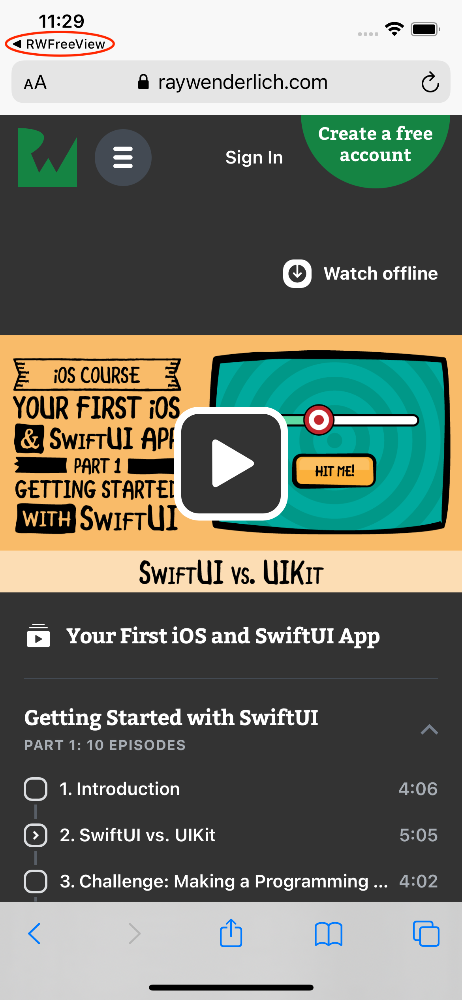
Link将用户从您的应用程序带到他们的浏览器应用程序，使他们能够访问他们的浏览器设置和保存的密码。他们可以轻松地登录，探索网站，甚至进行购买，而不会与你的应用程序共享任何安全数据或历史记录。
Note
如果你看到一个说明，说存在一个较新的版本，那是因为这个较旧的版本存在的时间较长，所以有更多的浏览量。
➤ 要返回到您的应用程序，请点击RWFreeView的返回按钮。
➤ 注释或删除Link(...) { ... }代码，并取消对NavigationLink代码的注释。
导航工具条按钮¶
现在，你要在导航工具栏上添加一个按钮，让用户根据平台（iOS、Android等）和难度（初级、中级、高级）进行过滤。
➤ 在.navigationTitle("Videos")下面添加这个代码：
.toolbar {
ToolbarItem {
Button(action: { }) {
Image(systemName: "line.horizontal.3.decrease.circle")
.accessibilityLabel(Text("Shows filter options"))
}
}
}
就像你在第15章"结构、类和协议"中做的那样，你把一个Button作为ToolbarItem添加到toolbar中。这个按钮使用默认的位置，位于工具栏的尾部。你很快就会填入按钮的action。
该按钮的标签是一个SF符号，代表一个过滤器，但是systemName没有说明这个用途。你可以写一个注释来提醒自己它是什么，但是把这些信息作为一个无障碍标签提供给VoiceOver读出来也很容易。
➤ 实时预览ContentView。你应该在右上角看到一个过滤器的图标：
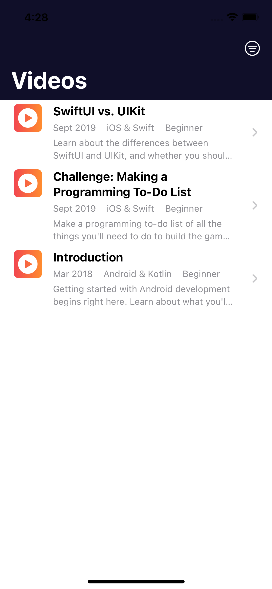
现在开始行动吧! 启动项目已经有一个FilterOptionsView，你知道如何使按钮以模态表的形式出现。
➤ 首先，将这个State属性添加到ContentView：
@State private var showFilters = false
➤ 然后，将这个Button动作添加到你的新工具栏按钮中：
showFilters.toggle()
➤ 最后，在toolbar闭包后添加这个修饰符：
.sheet(isPresented: $showFilters) {
FilterOptionsView()
}
➤ 实时预览ContentView。点击过滤按钮，查看过滤选项：
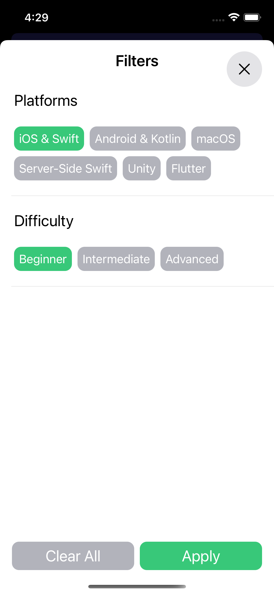
选择一个按钮会使其颜色变为绿色。你将在第24章"下载数据"中实现这些过滤器。
Note
为了支持动态类型，FilterOptionsView使用内置的文本样式，如title2，也使用AdaptingStack，当用户在设置中选择较大文本时，从HStack切换到VStack。
➤ 点击关闭按钮或应用来解除此模式表。
标题视图¶
从服务器上下载并显示结果的应用程序通常包括这样的功能：
- 让用户输入一个搜索词。
- 显示用户设置的任何过滤器，并让用户删除一个或全部过滤器而不显示
FilterOptionsView。 - 让用户选择排序顺序：最新的或最流行的。
- 显示获取的剧集数量。
一个常见的解决方案是在列表上方添加一个标题。为此很自然地使用一个VStack。
➤ 在ContentView.swift中，将List嵌入到VStack中，然后在List前添加HeaderView：
VStack {
HeaderView(count: store.episodes.count)
List(store.episodes, id: \.name) { episode in
➤ 检查navigationTitle等是否修改了VStack，而不是List。折叠ToolbarItem以帮助你看到VStack的结束位置，然后将VStack的结束括号移到.navigationTitle("Videos")上面一行。
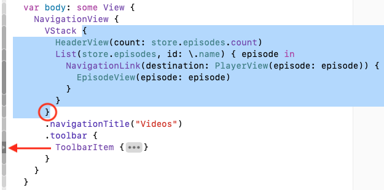
NavigationView在这一点上有一些奇怪的bug显示出来。最简单的修复方法是非直观性的。
➤ 给NavigationView添加这个修改器：
.navigationViewStyle(StackNavigationViewStyle())
➤ 刷新预览：
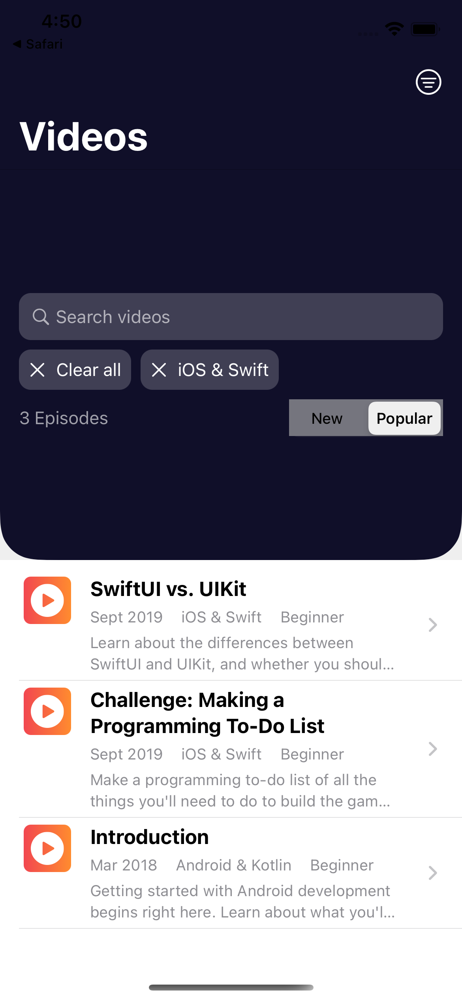
不太好。HeaderView太大了。你可以尝试用修改器来解决这个问题，但是有一个更简单的方法。
还记得这个List功能吗？你可以在同一个List中显示单独的视图和循环数组。诀窍是使用ForEach在episodes上循环。
➤ 用ForEach代替List，然后用List代替VStack：
List {
HeaderView(count: store.episodes.count)
ForEach(store.episodes, id: \.name) { episode in
NavigationLink(destination: PlayerView(episode: episode)) {
EpisodeView(episode: episode)
}
}
}
List可以显示任何视图的列表，但是在List里面，你需要ForEach来迭代episodes数组。你很快就会看到，ForEach也可以让你自定义每一行。
➤ 刷新预览：
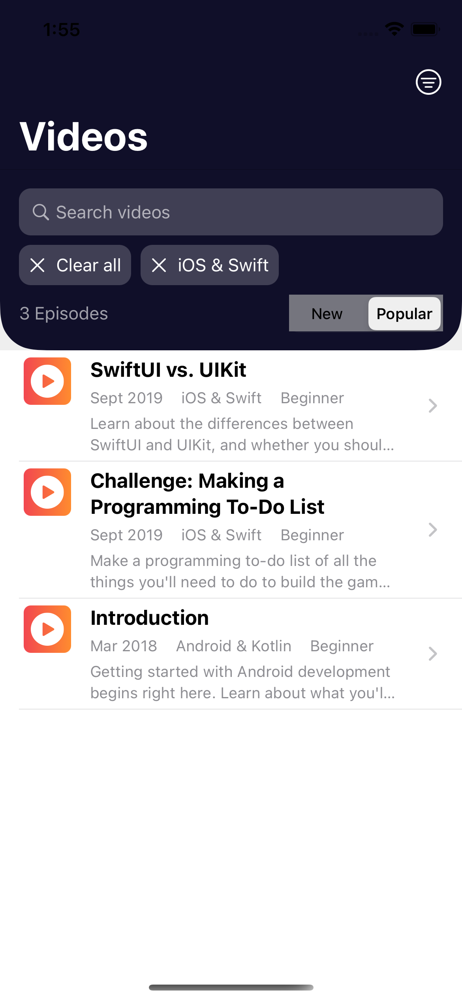
这样就好多了!
Note
感谢Mojtaba Hosseini提供的漂亮的cornerRadius(_:corners:)扩展，用于只对HeaderView的底角进行圆角处理。
你的列表和导航正在工作。只有最后一个功能需要添加。
页面大小菜单¶
HeaderView显示获取的剧集数量。正如你将在下一章看到的，服务器会发回一个项目页，并有一个获取下一页的链接。默认的页面大小是20，所以获取的剧集数量几乎总是20。
你将添加一个菜单，让用户改变这个数字。
在HeaderView.swift中，在包含Text、Spacer和Picker的HStack中，在Text和Spacer之间添加这个Menu。
Menu("\(Image(systemName: "filemenu.and.cursorarrow"))") {
Button("10 results/page") { }
Button("20 results/page") { }
Button("30 results/page") { }
Button("No change") { }
}
Menu就像你在第15章"结构、类和协议"中使用的contextMenu，用来删除一个卡片元素--事实上，它在后台使用contextMenu--但它是一个按钮。用户不需要长按它。
你将在第24章"下载数据"中填写按钮的动作。
➤ 在ContentView.swift中，刷新预览并点击新按钮：
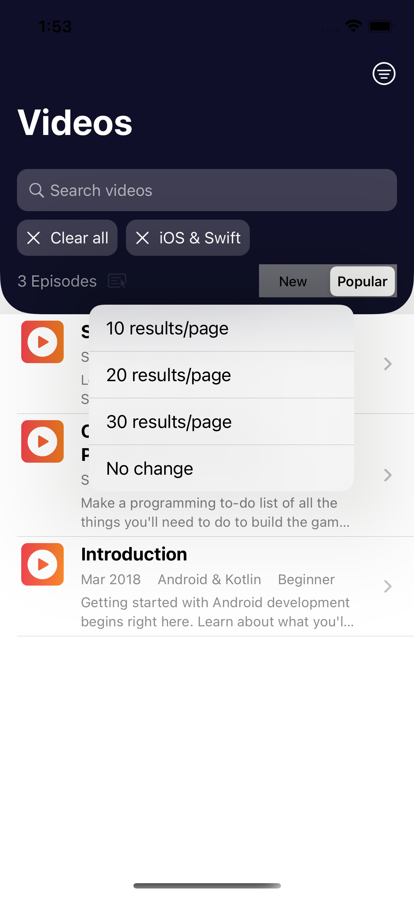
自定义设计¶
现在是时候定制清单以配合Figma的设计了。
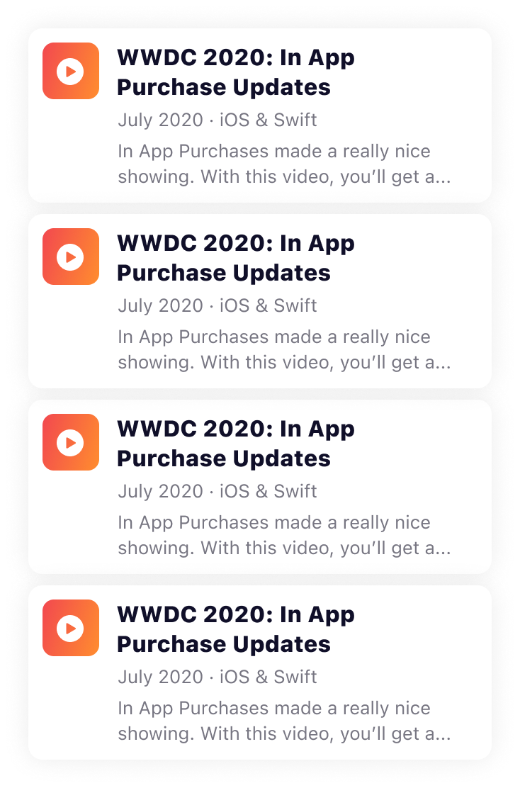
Figma的设计将每一行List配置为一张具有圆角和阴影的"卡片"。卡片之间有一个小空间，但没有列表分隔符。也没有披露指标。
创建一个卡片¶
➤ 在EpisodeView.swift中，向顶层的HStack添加这些修改器，使其看起来像一张卡片。
.padding(10)
.background(Color.itemBkgd)
.cornerRadius(15)
.shadow(color: Color.black.opacity(0.1), radius: 10)
你在文本周围添加填充物，并将背景颜色设置为白色（任何外观）或深灰色（暗色外观）。这将使它和它的阴影在List的背景下显得更加突出，你将很快把它设置为浅灰色（任何外观）或几乎黑色（深色外观）。
你把角变圆，然后设置一个阴影。
➤ 在ContentView.swift中，刷新预览：
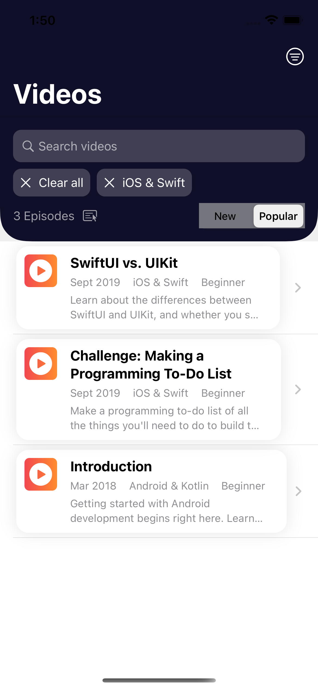
这是个好的开始。这些项目看起来像卡片，所以现在你不需要分隔线了。
隐藏列表分隔线¶
你将通过调整行的内容来隐藏列表的分隔线。
➤ 在ContentView.swift中，向NavigationLink( ... ) { ... }添加这些修改器：
.frame(
maxWidth: .infinity,
maxHeight: .infinity,
alignment: .leading)
.listRowInsets(EdgeInsets())
.padding(.bottom, 8)
.padding([.leading, .trailing], 20)
.background(Color.listBkgd)
Note
这与将HeaderView的背景颜色扩展到List行的边缘的代码非常相似。
你展开每一行的frame，并将所有EdgeInsets设置为零。然后，你添加填充物，将卡片彼此分开，并从侧面移入。最后，将List的背景设置为灰色。
➤ 刷新预览：
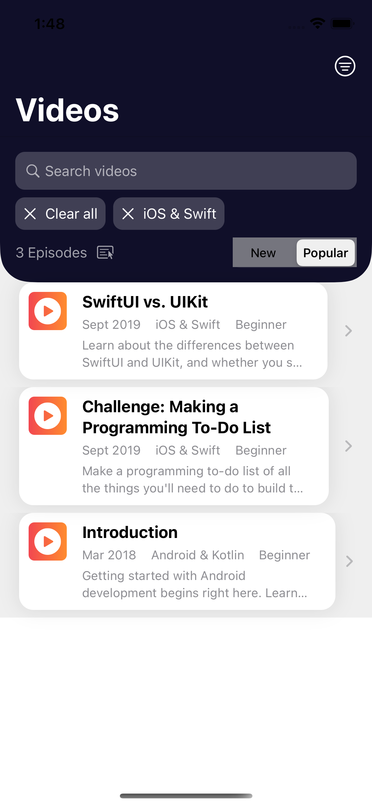
很好，不再有分隔线了!
Note
即使你不需要适应HeaderView，你也需要切换到List { ForEach ... }来定制列表的行数，像这样。ForEach的功能就像一个视图生成器。没有ForEach，你甚至不能修改行的背景颜色：listRowBackground(_:)没有任何效果，除非它在ForEach闭包内。
现在你已经定制了List行，当用户点击它时它不再改变颜色。但是在每个List行的尾部边缘的披露指示器显示它是可以被点击的，所以这并不是一个太大的问题。
隐藏披露指标¶
但是......披露指示器将"卡片"推到了与标题视图不一致的位置。而Figma的设计希望它消失。因此，这里是隐藏它的方法。
➤ 在ContentView中，将NavigationLink( ...) { ... }，改为以下内容：
ZStack {
NavigationLink(destination: PlayerView(episode: episode)) {
}
EpisodeView(episode: episode)
}
你将NavigationLink嵌入到一个ZStack中，确保分隔符隐藏修改器修改ZStack，它现在是List行的内容。然后你把EpisodeView(episode: episode)移出NavigationLink闭合，但仍在ZStack内。
EpisodeView不在NavigationLink中，所以没有披露指标。NavigationLink的destination没有变化，所以点击该行仍然显示PlayerView。
➤ 实时预览ContentView并点选一个项目，以确保导航链接仍然有效。
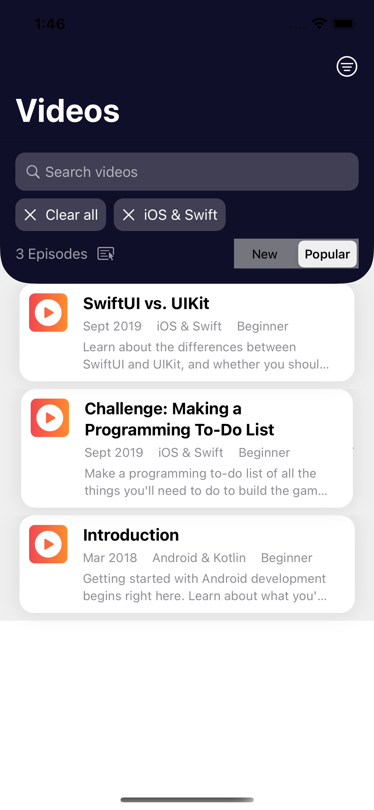
实际上，NavigationLink仍然显示一个披露指标，但它几乎被分层在上面的EpisodeView所覆盖。
➤ 为了揭示潜伏在下面的披露指标，减少EpisodeView的不透明度：
EpisodeView(episode: episode)
.opacity(0.2)
➤ 刷新预览：
是的，它们仍然在那里。取决于你在行中呈现的内容，你可能不会完全覆盖它们。你不希望为了隐藏这些指示器而影响你的设计，所以这里有一个解决方案，适用于你的任何行内容。
➤ 将此修改器添加到NavigationLink( ... ) { ... }：
.opacity(0)
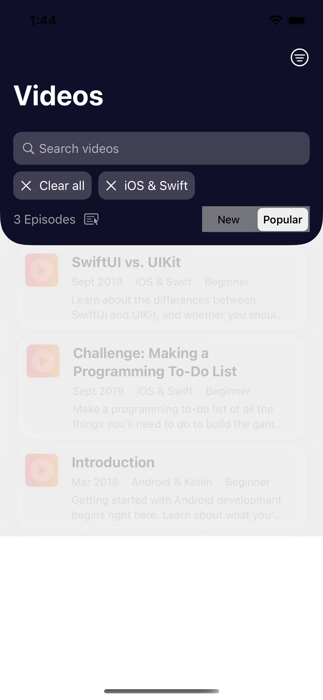
你让NavigationLink视图透明，所以它根本就不可见!
➤ 从EpisodeView( episode: episode)中删除.opacity(0.2)。
只是有两个细微的地方需要注意。
- 你未来的自己，或者接手你的代码的人，可能会想为什么
NavigationLink闭包里什么都没有，可能会把EpisodeView(episode: episode)移回里面。 - 当用户点击该行时，没有视觉反馈。
➤ 为了解决第一个问题，在NavigationLink闭合中加入这个视图：
EmptyView()
你明确地显示了一个空视图，所以你知道你是故意的。
➤ 对于第二个问题，在NavigationLink( ... ) { ... }中添加这个修饰符：
.buttonStyle(PlainButtonStyle())
你应用PlainButtonStyle()，当你点击List行时，会显示一个微小的视觉效果。
➤ 实时预览你的应用程序，并试用它，以确保一切仍然有效。
在iPad上运行RWFreeView¶
还有一件事：检查你的应用程序在iPad上看起来如何。
➤ 如果你在NavigationView上有这个修改器来修复navigationTitle的错误，把它注释掉：
.navigationViewStyle(StackNavigationViewStyle())
➤ 在iPad模拟器上建立和运行：
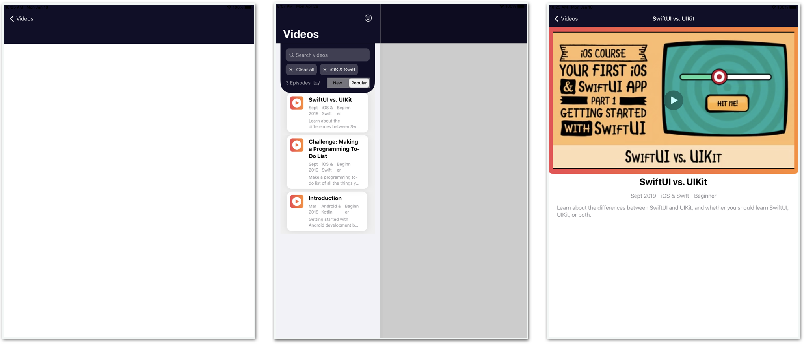
iPad上的默认导航风格是双栏式的，列表在侧边栏。这也是最大的iPhone在横向方向上的默认风格。当应用程序启动时，它会呈现一个几乎空白的屏幕。你可以指定一个初始选定的项目在启动时出现。
➤ 在ContentView.swift中，在.navigationTitle("Videos")之后添加这一行：
PlayerView(episode: store.episodes[0])
➤ 建立并再次运行：
现在，应用程序启动时有一个呈现第一集的PlayerView。
但是对于RWFreeView来说，你要防止你的应用程序使用这种默认样式。
➤ 删除或注释掉PlayerView(plisode: store.episodes[0])，然后向NavigationView { ... }添加（或恢复）这个修改器：
.navigationViewStyle(StackNavigationViewStyle())
你告诉应用程序在iPad和Max iPhone上总是使用堆栈导航。这是纵向的iPhone手机和横向的非Max iPhone手机的默认导航样式。
➤ 建立并再次运行以看到List，就像在iPhone上一样。然后旋转到横向：
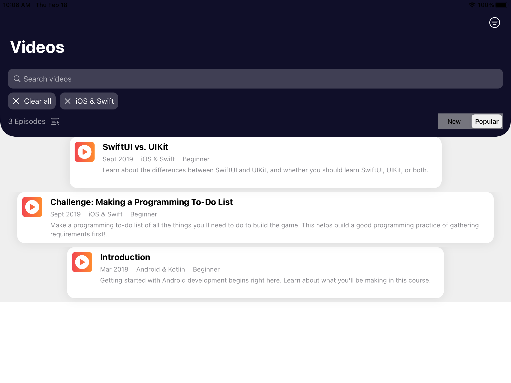
呀! 在横向方向，EpisodeView的宽度随description的长度而变化。但Figma的设计希望List的行数无论如何都要比iPad的屏幕窄，即使是在纵向方向。将宽度固定在644，每行可以有85个（脚注大小）字符，这对大多数人来说是一个舒适的阅读宽度。
➤ 在EpisodeView.swift中，给EpisodeView添加这些属性：
@Environment(\.verticalSizeClass) var
verticalSizeClass: UserInterfaceSizeClass?
@Environment(\.horizontalSizeClass) var
horizontalSizeClass: UserInterfaceSizeClass?
var isIPad: Bool {
horizontalSizeClass == .regular &&
verticalSizeClass == .regular
}
你检查该设备的垂直和水平尺寸类别。如果两者都是"regular"，则该设备是一个iPad。
➤ 现在将这个修改器添加到顶层的HStack中，在padding(10)之后：
.frame(width: isIPad ? 644 : nil)
如果设备是iPad，你将width设置为644。否则，让视图设置自己的width。
➤ 在iPad上再次构建和运行，并检查纵向和横向的方向。
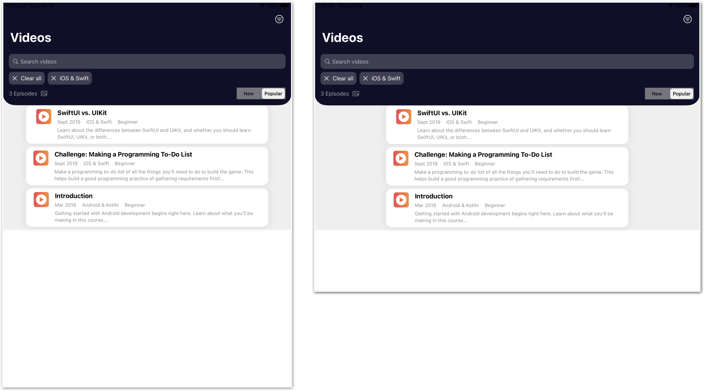
看起来不错! 现在你已经准备好学习如何从服务器上下载数据了，在下一章中，我们将介绍一些HTTP和REST API的基本知识。
关键点¶
SwiftUI的List视图是在一个垂直滚动的视图中展示项目集合的最简单方法。你可以在同一个List中显示单独的视图和循环数组（使用ForEach）。NavigationView在你的应用程序的导航层次中管理一个导航栈。点击一个NavigationLink将其目标视图推到导航堆栈中。点击后退按钮则将该视图从导航堆栈中弹出。- 一个
NavigationView可以包含其他的根视图。你可以用自己的navigationTitle和工具条来修改每个视图。 - 用
UINavigationBarAppearance来配置导航栏属性，然后把这个配置分配给UINavigationBar的外观。许多SwiftUI视图都有一个UIKit的对应物，你可以自定义其外观。 - 使用
Link很容易在设备的默认浏览器中打开一个网络链接。